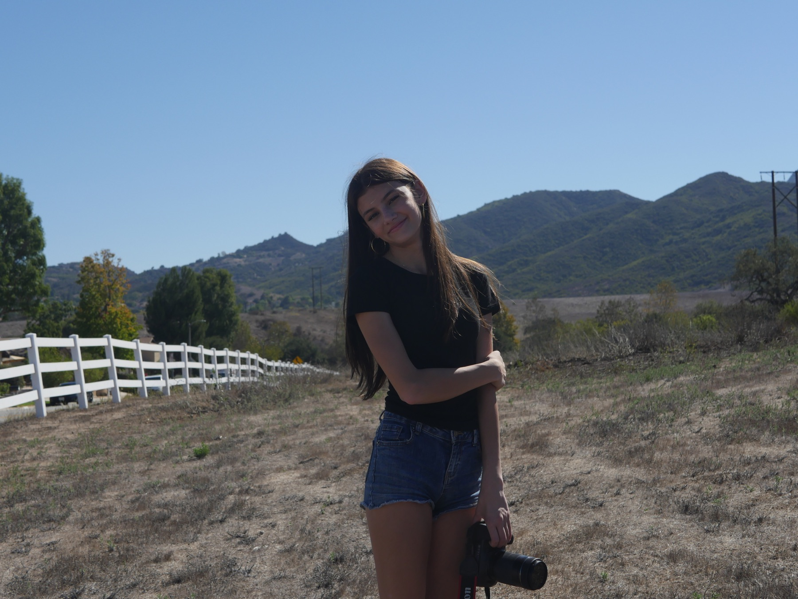

HI, I'M
Suzy!
I'm a student filmmaker, writer, and director from Newbury Park, California. I love character-driven stories and realistic teen characters, and work across screenwriting, directing, producing, editing, and live broadcast production.
stories with a little heart ♡
